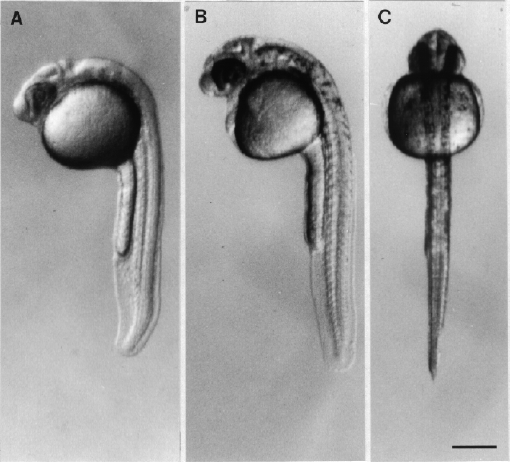
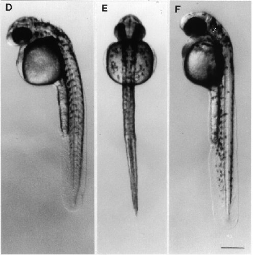
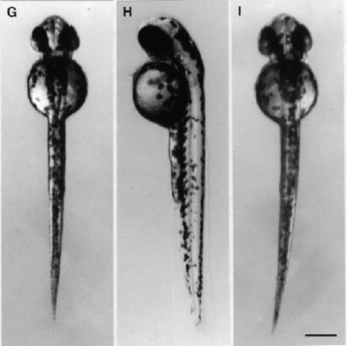

Modified from: Kimmel et al., 1955. Developmental Dynamics 203:253-310. Copyright © 1995 Wiley-Liss, Inc. Reprinted only by permission of Wiley-Liss, a subsidiary of John Wiley & Sons, Inc.
Fig. 29. Development during the pharyngula period. Left side and dorsal views (except for the prim-5 stage) of the same embryat the given stage. A: Left side view at the prim-5 stage (24 h). The brain is prominently sculptured (see Fig. 23 for a key the brain subdivisions). Melanogenesis has begun, but is not yet evident at this low magnification. B, C: The prim-12 stage (28 h). Melanophores extend from the level of the hindbrain tabout the middle of the yolk ball. D, E: The prim-20 stage (33 h). A few pigment cells are now present along the axis dorsal the yolk extension and on the dorsal part of the yolk ball. F, G: The prim-25 stage (36 h). Pigment extents almost to the end of the tail. The arrow in F indicates the ventral horn of melanophores. H, I: The high-pec stage (42 h). Pigment now extends the whole length of the embryo. The dorsal and ventral pigment body stripes are filled in, but not so neatly as they will be later. The lateral stripe is not yet evident. Scale bars: 250 µm.

Figure 29 A-C

Figure 29 D-F

Figure 29 G-I